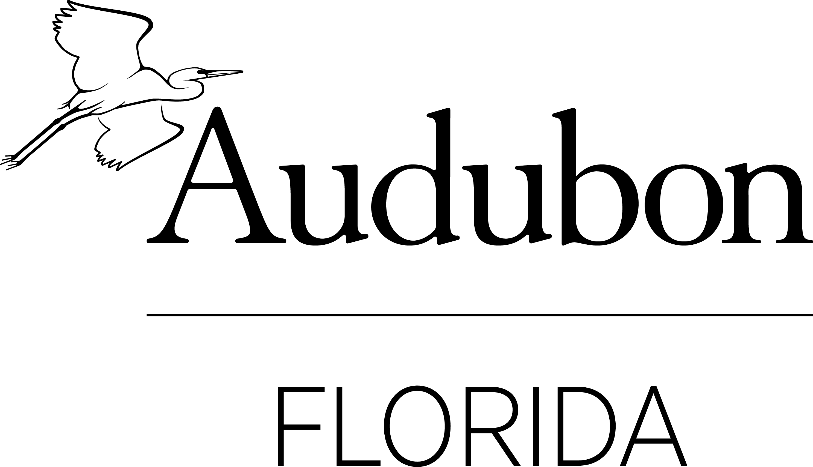

Save Lake O is a project created in partnership between the University of Miami School of Communication’s 2020 Collaboration & Innovation Laboratory class and Audubon Florida.

Project Managers
Corbin Graves
Lorena Lopez
Design Team
Haoran Zhang, design lead
Corbin Graves, curriculum designer
Lorena Lopez, video editor
Xueyan Zhang, 3D designer
Development Team
Yvonne Tsu, development lead
Jian He, developer
Kaimin Liu, developer
Research Team
Elizabeth Estefan, research lead
Juniette Fiore, researcher
Strategic Communications Team
Katy Huang, strategic communication lead
Jessenia Morales, copywriter
Faculty Advisor
Kim Grinfeder
Special thanks for their time and contributions to this project:
Doug Gaston, Audubon Florida
Dr. Paul Gray, Audubon Florida
Laura Aguirre, Audubon Florida
James Evans, Sanibel-Captiva Conservation Foundation
Jim Handley, Florida Cattlemen's Association
Ronnie Hataway, Caulkins Water Farm
Gene Lollis, Buck Island Ranch and Florida Cattlemen’s Association